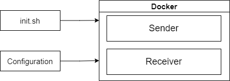
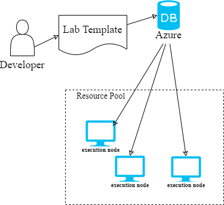

Advanced Manual: Developer
1 Advanced Features
1.1 Permission Description
In addition to the general experimental functions, the ONL platform also provides advanced functions that can be used at higher levels of access.
权限的表
Before introducing the advanced features, special permissions need to be described.
1.2 Permission: Developer
“Experimentation” is a core feature of the ONL platform. The ONL platform supports extensions to experimental categories. In the ONL platform, each experiment has a corresponding lab template. The lab templates are saved in the Azure cloud and synchronized to execution node. All experimental tasks are run based on code framework provided by their lab templates.
The developer is the role for developing lab templates in ONL. The design method of the lab template will be described in 2 Developer Guidance.
2 Developer Guidance
2.1 ONL Protocol And Experiments
Description of the ONL protocol and how to design ONL experiments
2.1.1 ONL Nodes
User-defined Sender
User-defined Receiver
Student Task
Ultilities
2.1.2 Configuration
How to design configurable items for the experiment template.
{
"seqno_width": 4,
"loss_rate": 0.1,
"max_delay": 30,
"timeout": 60,
"testcases": [
"this_is_some_text",
"abcdefghijklmnopqrstuvwxyzABCDEFGHIJKLMNOPQRSTUVWXYZ"
]
}
2.2 Build A Lab Template
The main body of the experiment template includes:
a docker image that holds the experimental code implemented using the ONL protocol
the startup file for the experiment
the configuration file of the lab template (resource requirements and configurable items)

client bash
>>> add_problem (config file path) -r (docker file path) (docker exucute script path)
example (take the TCP GBN Sender experiment as an example)
# first login as a administrator
>>> please assign your login info
>>> username: root
>>> password: ********
Login success
sessionid : wvtjkk9cdr13zful0imd931g5sseje3h
# add lab template
root >>> add_problem GBN.json -r image.tar cmd.json
# IF success:
add_problem success
# IF failed:
add_problem failed
# show lab templates
root >>> problems
id title description tags
1 Basic-01 TCP_GBN_LAB tcp transmission ['tcp', 'reliable transmission', 'transport layer']
Configuration
# GBN.json
{
"_id": "Basic-01",
"languages": ["python"],
"tags": ["tcp", "reliable transmission", "transport layer"],
"is_public": true,
"title": "TCP_GBN_LAB",
"description": "tcp transmission",
"lab_config": {
"seqno_width": 4,
"loss_rate": 0,
"timeout": 0.5,
"testcases": [
...
]
},
"hint": "",
"vm_num": 2,
"port_num": [1,1],
"code_num": 2,
"template": "",
"total_score": 100
}
docker image and setup file
# cmd.json
image: image.tar
cmd: ["bash ../receiver.sh","bash ../sender.sh"]
2.2 Manage Lab templates
ONL platform saves all lab templates in Azure cloud and synchronizes them to resource nodes periodically.

The advantage of using Azure to save lab templates is that they can be easily managed:Modifications to lab templates (including deletion) do not require too much involvement of the controller, reducing the work pressure on the controller;
lab templates can be easily synchronized to the resource nodes in a timely manner.
client bash
>>> problem del (lab template id)
example (take the TCP GBN Sender experiment as an example)
# show lab templates
root >>> problems
id title description tags
1 Basic-01 TCP_GBN_LAB tcp transmission ['tcp', 'reliable transmission', 'transport layer']
# delete lab template
root >>> problem del 1
# IF success
delete success
# IF failed
delete failed
# show lab templates
root >>> problems
id title description tags